設定ダイアログの各項目について説明します。
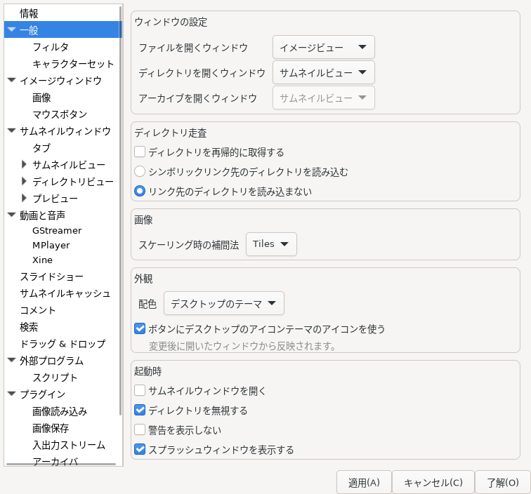
[設定 | 一般] (既定の設定)
コマンドラインからファイルを開いた時、また、ファイルオープンダイアログから「了解」を押した際の展開先ウィンドウを設定します。
「〜ウィンドウで開く」のような指定が無い箇所では、ここの指定に従って展開先が決まります。
コマンドラインからディレクトリを開いた時の展開先ウィンドウを設定します。
コマンドラインからアーカイブを開いた時の展開先ウィンドウを設定します。
コマンドラインでディレクトリを引数に取った時、常に再帰的に取得するようになります。
コマンドラインオプション、-dR と同義です。
再帰的に取得する際に、シンボリックリンク先のディレクトリも読み込むかどうかです。
画像をスケーリング(拡大縮小)する際の、補間方法を指定します。以下の4種類から指定できます。
Nearest : 最近傍法。最も速いが、画質は粗くなります。
Tiles : 拡大時は Nearest と同じ、縮小時は画素を平均します。
Bilinear : 双線形補間。速度と画質のバランスが良い方法です。
Hyperbolic : ハイパーボリック。最も高画質ですが、遅くなります。
ウィンドウの配色を、以下の3つから選びます。変更は「適用」または「了解」ですぐに反映されます。GTK 4 版で追加した項目です (初期値は「デスクトップのテーマ」)。
デスクトップのテーマ : デスクトップで選んだテーマ (GTK の gtk-theme-name。X11 では XSETTINGS の Net/ThemeName) で表示します。GTK 4 は gtk-4.0 ディレクトリのないテーマ (GTK 2/3 用のテーマ) を読めず、明るい Adwaita で表示します。そのようなテーマの名前に「dark」が含まれる場合 (Greybird-dark など) は、暗い Adwaita で表示します。
ライト : 明るい配色で表示します。テーマの名前が「-dark」で終わる場合は、それを除いた名前のテーマを使います。そのテーマを GTK 4 が読めない場合は Adwaita を使います。
ダーク : 暗い配色で表示します。テーマに暗い版 (gtk-dark.css) がない場合は、暗い Adwaita を使います。
環境変数 GTK_THEME が設定されている場合は、GTK はそのテーマを使い、この項目は働きません。黒い線だけで描かれた GImageView 独自のアイコン (ズーム、ドットファイル表示/非表示など) は、暗い配色では明るい線で表示されます。
ツールバーなどのボタンに、デスクトップのアイコンテーマ (Adwaita、Papirus など) のアイコンを使います。テーマに対応するアイコンがないボタンや、ディレクトリツリーのアイコンは GImageView 独自のものです。変更後に開いたウィンドウから反映されます。GTK 4 版で追加した項目です (初期値は ON)。
独自のアイコンを使いたい場合は、~/.gimv/icons/<名前>/ にアイコン名のファイル (back.png、zoom_in.svg、refresh.xpm など。PNG、SVG、XPM が使えます) を置き、~/.gimv/gimvrc の iconset= にその名前を書いて下さい。置いたアイコンはテーマのアイコンより優先されます。
GImageView を起動した時、常にサムネイルウィンドウを開くかどうか、です。
引数にディレクトリを与えられた時、それを無視するようになります。
コマンドラインから起動した時に表示される警告メッセージを抑制します。
起動時にスプラッシュウィンドウ(ロゴ画像)を表示するかどうか、です。GTK 4 版で追加した項目です。
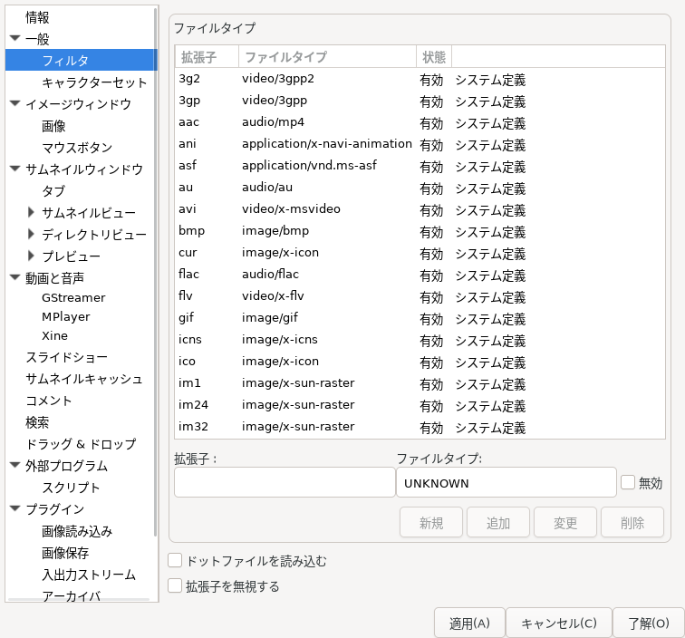
[設定 | 一般 | フィルタ] (既定の設定)
拡張子とファイルタイプ (MIME タイプ) の対応の一覧です。「状態」が「無効」の拡張子のファイルは読み込みません。
一覧の下の欄で拡張子とファイルタイプを入力し、「追加」で新しい対応を登録します。登録済みの対応は、選択して「変更」「削除」できます。「無効」にチェックを入れると、その拡張子を無効にします。「システム定義」の対応は削除できません。
.で始まる画像ファイルやディレクトリを開くかどうか、です。なお、ディレクトリビューに関しては専用の設定 (項6.3.3) がありますので、ここの設定に従いません。
ファイルの拡張子による判別を行わず、全てのファイルを読み込みの対象にします。
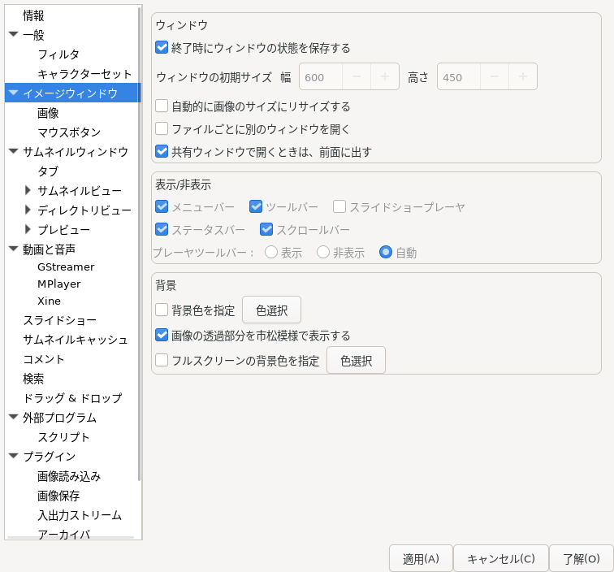
[設定 | イメージウィンドウ] (既定の設定)
終了時のウィンドウサイズ、各バーの表示/非表示などを保存し、次回起動時に反映させるようになります。このオプションが OFF の場合、「ウィンドウの初期サイズ」と「表示/非表示」の各項目で初期状態を設定します。
イメージウィンドウを生成した時の、初期サイズ (幅・高さ) を決めます。
イメージウィンドウを生成した時、自動的に展開画像のイメージサイズにウィンドウをリサイズするようになります。
GImageViewの詳しい挙動を書きますと、まず上の「ウィンドウの初期サイズ」のサイズでイメージウィンドウが生成されます。その後、ここのオプションが有効になっていれば、展開した画像のサイズにイメージウィンドウが自動的にリサイズします。このように動作が2段階になりますので、処理時間は増えることになります。
毎回、ファイルごとに新規イメージウィンドウを作ります。展開したファイルの数だけイメージウィンドウが出来ることになります。また、それらのウィンドウは共有されることはありません。
サムネイル右クリックメニュー、共有ウィンドウで開くから、共有イメージウィンドウを生成した場合に、ウィンドウを最前面に出すようにします。
イメージウィンドウを開いた時に各種バーを表示するかどうかです。[設定 | イメージウィンドウ] の終了時にウィンドウの状態を保存するが OFF の場合に指定できます。
スクロールバーは、画像がウィンドウからはみ出す向きにだけ表示されます。この項目を OFF にすると、はみ出す場合も表示しません。
動画・音声の再生用ツールバーの表示方法です。「表示」「非表示」のほか、「自動」では動画・音声を表示している時だけ表示します。
チェックを入れると、画像の背景を「色選択」で選んだ色で塗ります。
透過のある画像の背景を、灰色の市松模様で表示します。GTK 4 版で追加した項目です (初期値は ON)。
チェックを入れると、全画面表示の時の背景を「色選択」で選んだ色で塗ります。
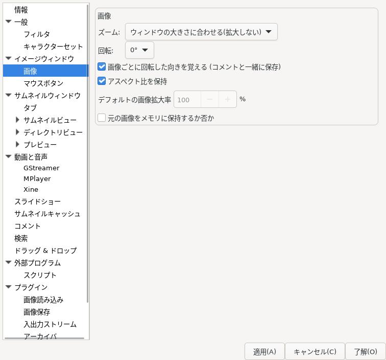
[設定 | イメージウィンドウ | 画像] (既定の設定)
イメージウィンドウで画像を表示する時の設定です。
画像を表示する時の大きさを、以下から選びます。
デフォルトの画像拡大率 : 下の「デフォルトの画像拡大率」で表示します。
変更しない : 直前に表示していた画像の拡大率のまま表示します。
ウィンドウの大きさに合わせる : ウィンドウの大きさに合わせて拡大縮小します。
ウィンドウの大きさに合わせる(拡大しない) : ウィンドウより大きい画像だけを縮小します (初期値)。
画像をフレーム幅に合わせる / 画像をフレーム高さに合わせる : 幅または高さをウィンドウに合わせます。
画像を表示する時の向きです。0°、90°反時計回り、180°、90°時計回りのほか、「変更しない」(直前の画像の向きのまま) を選べます。EXIF 対応で作成した場合は、「EXIFデータに応じる」も選べます。
画像を回転すると、その向きをコメントと同じ場所に保存し、次にその画像を開いた時に同じ向きで表示します。GTK 4 版で追加した項目です (初期値は ON)。
画像を拡大縮小した時、アスペクト比(画像の縦横比率)を保持するようになります。
デフォルトの画像拡大率を指定します。「ズーム」が「デフォルトの画像拡大率」か「変更しない」の場合に指定できます。
表示した画像をメモリ上に保持するようになります。具体的な効果は、Tipsの「イメージビューの描画を速くする」を参照して下さい。
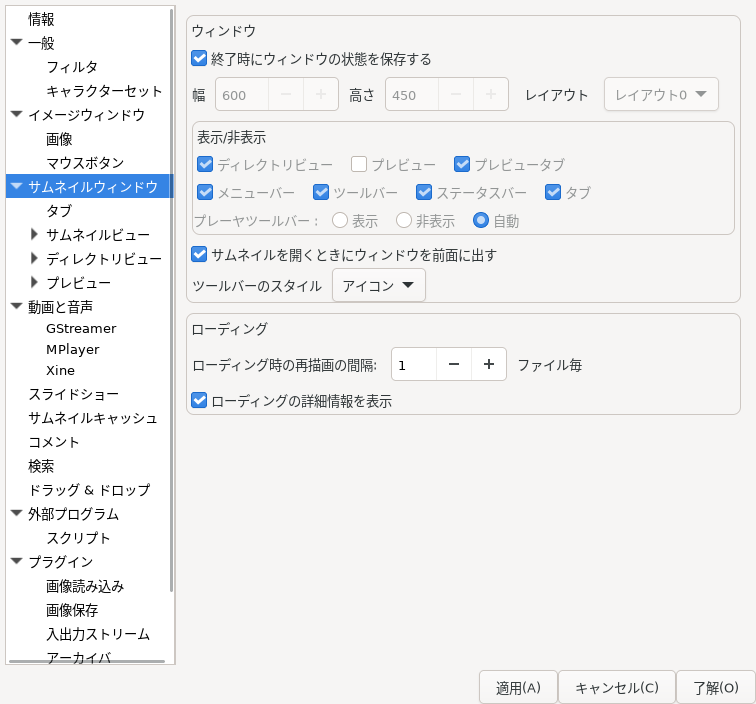
[設定 | サムネイルウィンドウ] (既定の設定)
終了時のウィンドウサイズ、レイアウト、各部の表示/非表示などを保存し、次回起動時に反映させるようになります。このオプションが OFF の場合、「幅」「高さ」「レイアウト」と「表示/非表示」の各項目で初期状態を設定します。
サムネイルウィンドウを生成した時の、初期サイズを決めます。
サムネイルウィンドウ内の各ビュー(ディレクトリ・サムネイル・プレビュー)の配置を、レイアウト0〜4、カスタムから選びます。メニューの表示 | レイアウトと同じものです。
サムネイルウィンドウを開いた時に、ディレクトリビュー・プレビュー・プレビュータブ・メニューバー・ツールバー・ステータスバー・タブを表示するかどうかです。
プレビューの動画・音声用ツールバーの表示方法です。「自動」では動画・音声を表示している時だけ表示します。
サムネイル展開終了時にウィンドウを前面に出すかどうか、です。
これは「ディレクトリの再帰読み込み」を行った時も有効です。この場合、各ディレクトリのサムネイル展開が終了するたびにサムネイルウィンドウが最前面に出てくるようになります。
ツールバーのボタンを、アイコン・テキスト・その両方のどれで表示するかを選びます。
サムネイルを生成する時に、この間隔で描画を行うようになります。
具体的には、ここで指定した枚数ごとにサムネイルビューが再描画されます。Tipsの「サムネイルビューの描画完了を速くする」も参考にして下さい。
サムネイルの読み込み中に、プログレスバーに「読み込んだ数/全体の数」と、読み込んでいるファイル名を表示します。
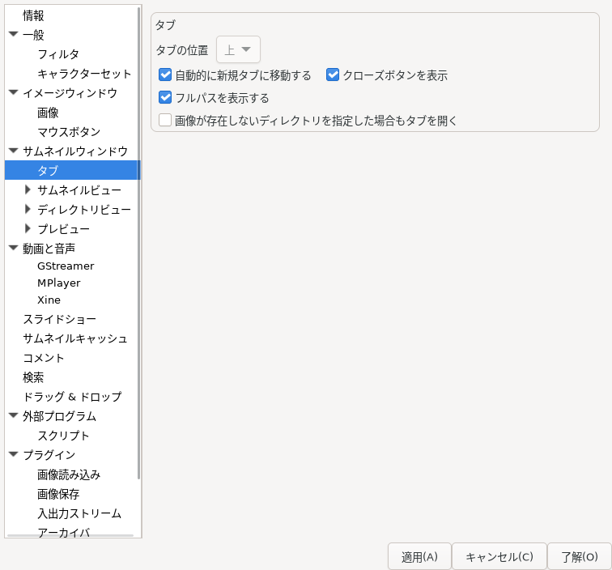
[設定 | サムネイルウィンドウ | タブ] (既定の設定)
ウィンドウのタブ位置を指定します。
ただし、[設定 | サムネイルウィンドウ] の終了時にウィンドウの状態を保存するが OFF 状態でないと、本項目は有効になりません。
新しくタブが生成された時、そこに移動するようになります。
タブの右端にクローズボタンが表示されるようになります。
通常、タブにはファイルのパスが全て表示されます。このオプションを外すことで、カレントディレクトリ名だけにすることが出来ます。タブの幅を押さえたい場合などに有効です。
画像が存在しないディレクトリを指定した場合もタブを開くようになります。
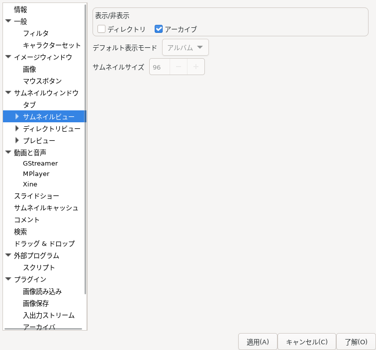
[設定 | サムネイルウィンドウ | サムネイルビュー] (既定の設定)
サムネイルビュー内に、ディレクトリ、アーカイブを表示するかどうかです。
サムネイルウィンドウのデフォルト表示モードを指定します。[設定 | サムネイルウィンドウ] の終了時にウィンドウの状態を保存するが OFF の場合に指定できます。
デフォルトのサムネイルサイズを指定します。[設定 | サムネイルウィンドウ] の終了時にウィンドウの状態を保存するが OFF の場合に指定できます。
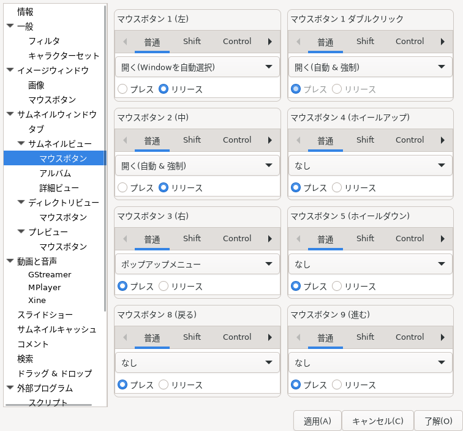
[設定 | サムネイルウィンドウ | サムネイルビュー | マウスボタン] (既定の設定)
マウスボタンの割り当てを設定します。ボタン (左・中・右、ホイールの上下、左のダブルクリック、サイドボタンの「戻る」(ボタン 8) と「進む」(ボタン 9)) ごとに、修飾キー (普通・Shift・Control・Mod1 (Alt)) の組み合わせについて、機能と、ボタンを押した時 (プレス) と離した時 (リリース) のどちらで実行するかを指定して下さい。ボタン 8・9 の初期値は「なし」です。
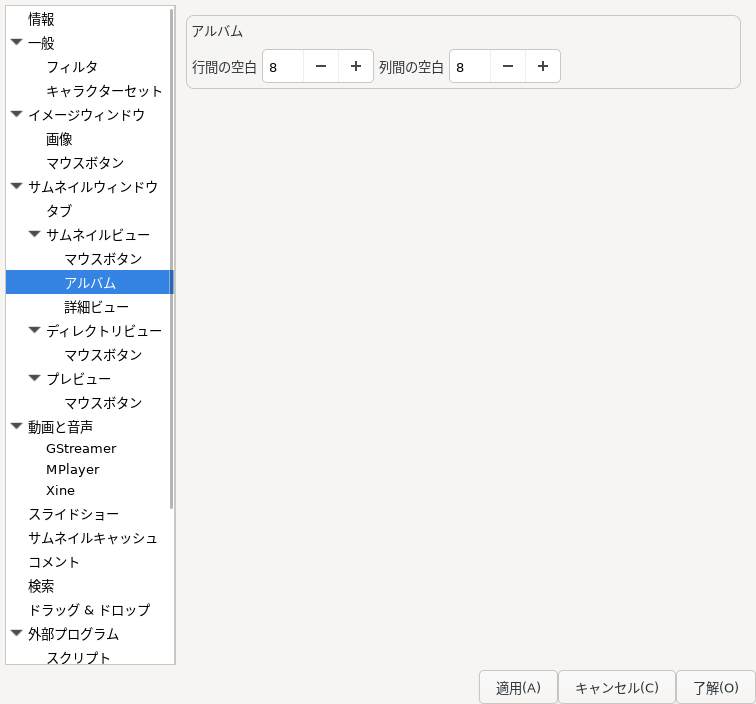
[設定 | サムネイルウィンドウ | サムネイルビュー | アルバム] (既定の設定)
表示モードが「アルバム」「アルバム2」「アルバム3」の場合の設定です。各表示モードの画面は、項4.1 のサムネイルビューの表示モードを参照して下さい。
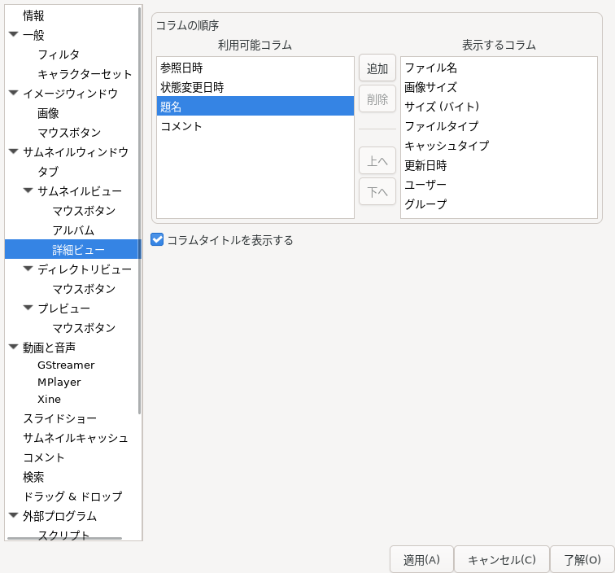
[設定 | サムネイルウィンドウ | サムネイルビュー | 詳細ビュー] (既定の設定)
表示モードが「詳細」「詳細 + アイコン」「詳細 + サムネイル」の場合に表示するコラムを指定します。右側の「表示するコラム」にある項目が表示項目です。「追加」「削除」で項目を移し、「上へ」「下へ」で順番を変えます。また、「コラムタイトルを表示する」でコラムタイトルの表示/非表示も設定できます。
GTK 4 版では、コメントの「題名」と「コメント」(メモ欄の 1 行目) の項目を追加しました。表示するには、これらを右側のペインに移して下さい。コメントを保存・削除すると、表示中の一覧にすぐ反映されます。なお、アルバム表示では、コメントのある画像にマウスを合わせると、題名とメモ欄の内容がツールチップで表示されます。
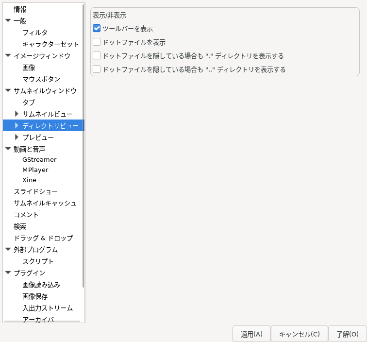
[設定 | サムネイルウィンドウ | ディレクトリビュー] (既定の設定)
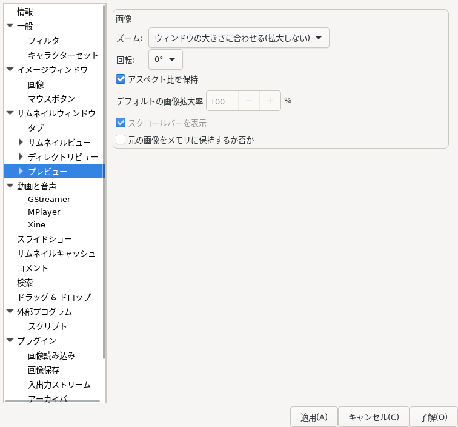
[設定 | サムネイルウィンドウ | プレビュー] (既定の設定)
プレビューで画像を表示する時の設定です。「ズーム」「回転」「アスペクト比を保持」「デフォルトの画像拡大率」「元の画像をメモリに保持するか否か」は、イメージウィンドウの同じ項目 (項6.2.1) と同じ意味です。
スクロールバーを表示します。[設定 | サムネイルウィンドウ] の終了時にウィンドウの状態を保存するが OFF の場合に指定できます。画像がはみ出す向きにだけ表示されます。
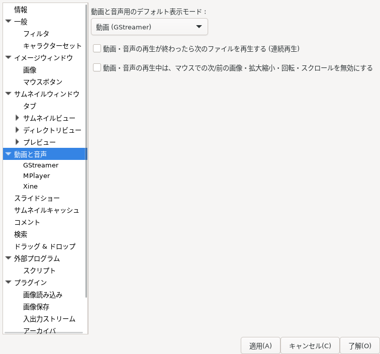
[設定 | 動画と音声] (既定の設定)
その下の「GStreamer」「MPlayer」「Xine」の各ページでは、それぞれのプラグインで動画のサムネイルを作成するかどうかと、サムネイルにする位置 (ストリームの位置) を指定します。MPlayer・Xine のページでは、使用するドライバも指定します。ページは、組み込まれているプラグインの分だけ表示されます。
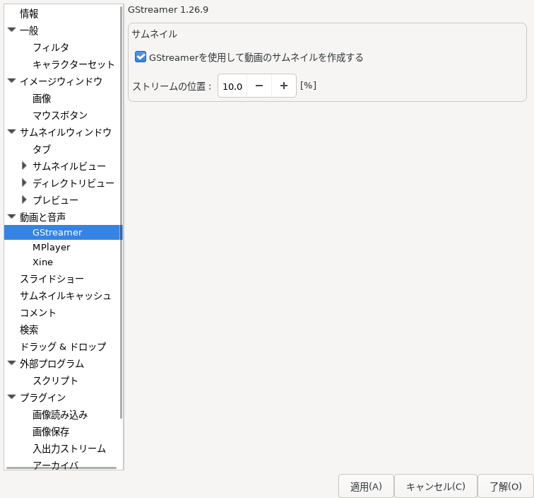
[設定 | 動画と音声 | GStreamer] (既定の設定)
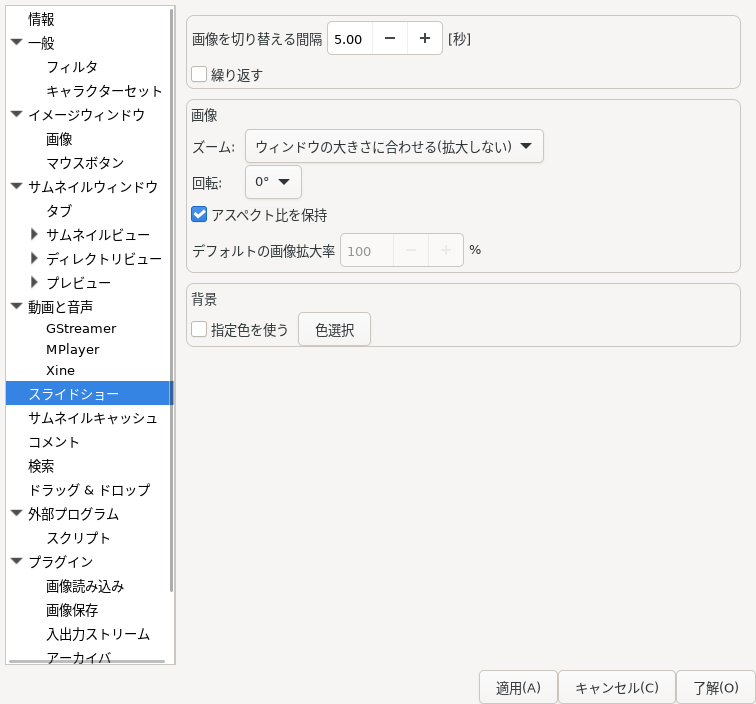
[設定 | スライドショー] (既定の設定)
スライドショーを実行した時、画像を送っていく時間を指定します。
通常、スライドショーはサムネイルビュー内の画像を一巡したら終了しますが、それを繰り返すようになります。
スライドショーで画像を表示する時の設定です。各項目の意味は、イメージウィンドウの同じ項目 (項6.2.1) と同じです。
「指定色を使う」にチェックを入れると、スライドショー時の背景を「色選択」で選んだ色で塗ります。
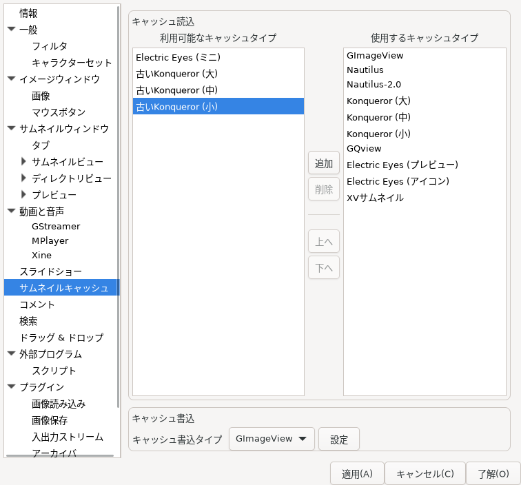
[設定 | サムネイルキャッシュ] (既定の設定)
キャッシュについて、読込、書込のファイル形式を指定します。
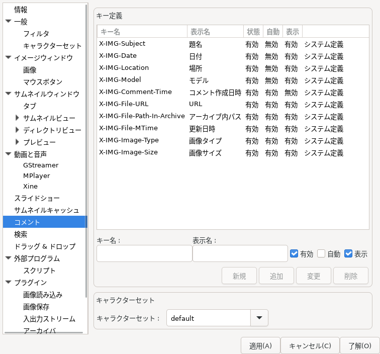
[設定 | コメント] (既定の設定)
コメント時に使用する、各種キー定義、ならびにキャラクターセットを指定します。
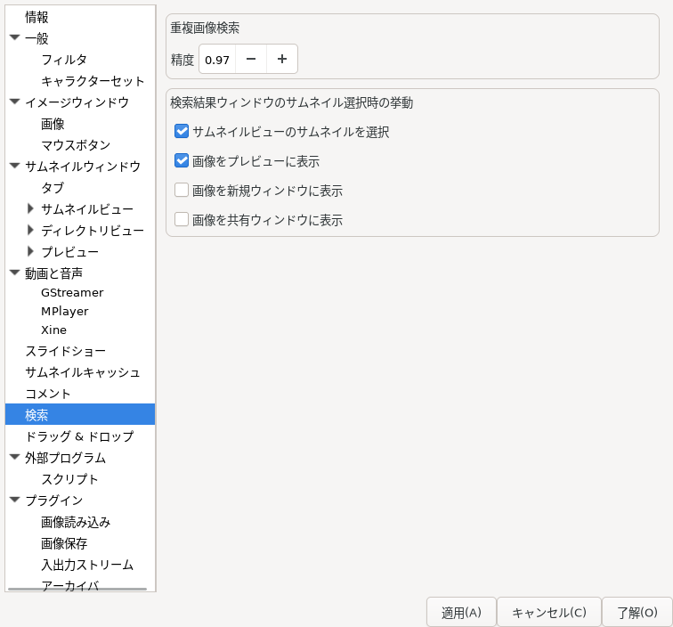
[設定 | 検索] (既定の設定)
[ツール | 重複画像検索 | 類似度] の、検索誤差を指定します。初期値は0.97、97%以上の合致率であればリストアップ、となります。詳細は、「類似画像検索」を見て下さい。
検索結果ウィンドウでサムネイルを選択した時に、サムネイルビューの同じサムネイルを選択する・画像をプレビューに表示する・新規ウィンドウに表示する・共有ウィンドウに表示する、のそれぞれを行うかどうかを指定します。
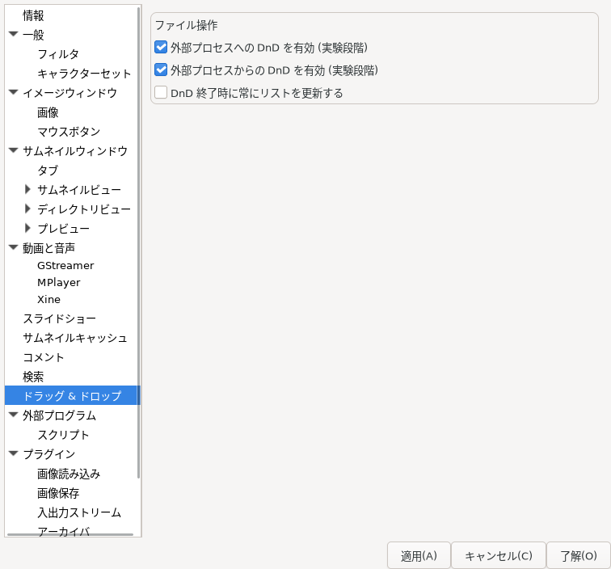
[設定 | ドラッグ & ドロップ] (既定の設定)
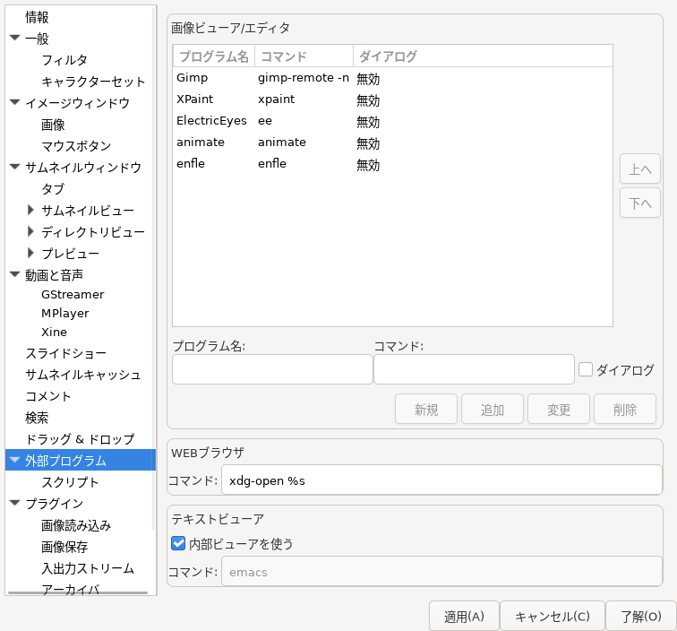
[設定 | 外部プログラム] (既定の設定)
GImageView から利用する、各種外部プログラムを指定します。
「画像ビューア/エディタ」は、マウスメニューの「外部プログラムで開く」に表示されるプログラムの一覧です。プログラム名とコマンドを入力して追加・変更・削除し、「上へ」「下へ」で順番を変えます。「ダイアログ」にチェックを入れると、実行前にダイアログを表示します。
「Web ブラウザ」はヘルプの HTML 文書やマニュアルを開くのに使います。%s が文書のパスに置き換わります。GTK 4 版の初期値は xdg-open %s (デスクトップの既定のブラウザ) です。以前の初期値 mozilla %s が保存されている場合は、自動的に xdg-open %s に置き換えます。
「テキストビューア」で「内部ビューアを使う」を on にすると、テキスト文書を GImageView 内蔵のビューアで表示します。内蔵ビューアは UTF-8、EUC-JP、Shift_JIS、ISO-2022-JP の文書を自動判別して表示します。